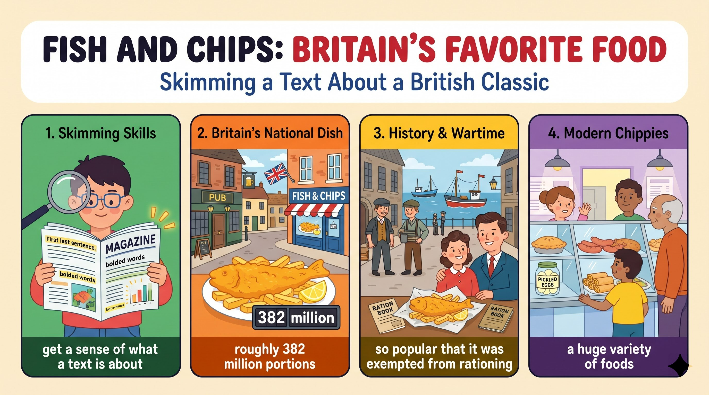

去年夏天我到倫敦找表姊，她帶我去家附近的一間小酒館。
took me to a small pub表姊說炸魚薯條在英國受歡迎到每年吃掉約 3.82 億份，所以我非吃不可。
so popular that ...等餐時我讀到牆上的告示：1860 年代起源、北海的魚容易取得，二戰時還因提振士氣而免於配給。
exempted from rationing隔天我們去了一家賣各式食物的 chippy，那次經驗有趣到讓我明白大家為什麼都愛它。
such a fun experience that ...I (S) + visited (V) + my cousin (O)，and she (S) + took (V) + me (O)。
take sb to + 地點（帶某人去）。
Last summer,（時間副詞）I visited my cousin in London,（主幹一）and she took me to a small pub（主幹二）near her home.（後位修飾）語塊 1（去年夏天）➔ 語塊 2（我到倫敦探望表姊）➔ 語塊 3（她帶我去）➔ 語塊 4 提前（她家附近的）➔ 一間小酒館
記敘文第一句，先翻時間「去年夏天」。
I visited ...、she took me ...，是對等子句，交代事情發生的先後。take sb to＋地點；Last summer／Last year 不加 in。時間, I + 過去式 ..., and ...，一句交代時地人。She (S) + told (V) + me (O1) + that 子句 (O2)。
that fish and chips is so popular in Britain 是名詞子句；裡面再含 so ... that 結果子句。
She told me（主幹）that fish and chips is so popular in Britain（that 名詞子句）that people eat roughly 382 million portions（so ... that 結果子句）every year.（時間副詞）語塊 1（她告訴我）➔ 語塊 2（炸魚薯條在英國受歡迎到）➔ 人們 ➔ 語塊 4 提前（每年）➔ 語塊 3（大約吃掉三億八千兩百萬份）
「她告訴我」先翻，接著是表姊說的內容。
that：往左看 told me，tell sb 後面要接「一件事」➔ 名詞子句。that：往左看是 so popular，so＋形容詞後面的 that 接結果 ➔ 結果子句。tell sb that ...；不變的事實在 that 子句用現在式。She told me that ... 間接引述，比一直用引號更流暢。she (S) + said (V) + (that) 子句 (O)。
without trying it 介系詞＋V-ing。
As such,（轉折副詞）she said（主幹）I could not leave without trying it.（名詞子句（雙重否定））語塊 1（因此）➔ 語塊 2（她說）➔ 語塊 3（我一定要吃過才能離開）
As such 翻「因此」，接著「她說」。
As such：轉折副詞＝因此，前一句講「多受歡迎」，這句講「所以一定要吃」。said 後面直接接 I could not leave ...，省略名詞子句的 that。表姊原話是 "You can't leave without trying it."，改成間接引述時 you ➔ I、can ➔ could。not ... without V-ing 雙重否定＝一定要。
can't ... without V-ing＝一定要……：We can't live without water.。While we waited，I (S) + read (V) + a sign (O)。
While we waited 是時間副詞子句（while＝當……的期間）。
While we waited,（while 時間子句）I read a sign（主幹）on the wall.（地點介片）語塊 1（等餐的時候）➔ 語塊 2（我看到）➔ 語塊 3 提前（牆上的）➔ 一塊告示
While 子句在前，照順序翻「等餐的時候」。
While we waited 後面接主句 I read a sign，兩件事同時發生：一邊等、一邊看。這時 while＝when／during the time。while＋過去式＝在……期間；while 也可表對比。While we waited, ... 這種短句轉場，節奏明快。It (S) + suggested (V) + that 子句 (O)。
, when fish from the North Sea was easy to come by 是非限定關係副詞子句，補充 the 1860s。
It suggested（主幹）that the dish was first served in the 1860s,（that 名詞子句）when fish from the North Sea was easy to come by.（非限定 when 子句）語塊 1（上面寫著）➔ 語塊 2（這道菜最早是在 1860 年代開始供應）➔ 語塊 3（當時北海的魚很容易取得）
It suggested 的 It 是告示牌，翻「上面寫著」最自然。
that：suggested 後接完整句，名詞子句。, when：往左看是時間名詞 the 1860s，往右看 fish ... was easy to come by 完整 ➔ 關係副詞 when，＝in which。前面有逗號，是補充說明，中文拆成「當時……」。
the 1860s, when ...＝the 1860s, in which ...。, when ... 補充，故事不會中斷。It (S) + even said (V) + (that) 子句 (O)。
because it lifted people's morale 原因子句。
It even said（主幹）the meal was exempted from rationing during the war（名詞子句（被動））because it lifted people's morale.（because 原因子句）語塊 1（上面甚至寫著）➔ 語塊 2（這道餐點在戰爭期間免於配給）➔ 語塊 3（因為它能提振人們的士氣）
It even said 翻「上面甚至寫著」，even 表示作者覺得驚訝。
said 後面直接接完整句 the meal was exempted ...，中間省略 that。because 後面講理由，放在句尾補充即可；中文也可以提前成「因為……，所以……」，兩種都對。
lift＝boost＝raise morale。It even said ... 表現「我」的驚訝，讓情緒自然帶出。we (S) + visited (V) + a chippy (O)。
that sold a wide variety of foods 是主格關代子句；from A to B 列舉。
The next day,（時間副詞）we visited a chippy（主幹）that sold a wide variety of foods,（主格關代子句）from pies to spring rolls.（列舉）語塊 1（隔天）➔ 語塊 2（我們去了）➔ 語塊 3 提前（一家賣各式各樣食物的）➔ chippy ➔ 語塊 4（從派到春捲都有）
The next day 先翻「隔天」，故事往下推進。
a chippy，往右看 sold a wide variety of foods 缺主詞 ➔ 主格關代 that（＝which）。The next day／The following day＝隔天。The next day, ... 推進時間，段落銜接自然。It (S) + was (V) + such a fun experience (C)，後接 that 結果子句。
such ... that 結果子句，內含 why fish and chips is popular with everyone 名詞子句。
It was such a fun experience（such＋a＋Adj.＋N）that I now understand（that 結果子句）why fish and chips is popular with everyone.（why 名詞子句）語塊 1（那是一次非常有趣的經驗）➔ 語塊 2（讓我現在終於明白）➔ 語塊 3（為什麼炸魚薯條這麼受大家歡迎）
結尾先說感受：「那是一次非常有趣的經驗」。
such ... that：such 後面有名詞 a fun experience ➔ 用 such。若寫 so，要改成 so fun that（後面沒有名詞）。why：往左看 understand 是及物動詞，往右看 fish and chips is popular ... 完整 ➔ 名詞子句。such a fun experience＝so much fun；fun（好玩）≠ funny（好笑）。It was such a ... experience that I now understand ...，寫出經驗帶來的領悟。1. 請選出最適合填入 (1) 的字：
so ... that。2. 請選出最適合填入 (2) 的字：
As such：因此。3. 請選出最適合填入 (3) 的字：
A sign suggested that ...。4. 請選出最適合填入 (4) 的字：
be hard to come by：很難取得。5. 請選出最適合填入 (5) 的字：
such a(n) Adj. N that。6. My cousin took me to a ________ near his home to watch the football game.
at the pub。7. I was so hungry that I ordered two ________ of fries.
two portions of。8. The coach's kind words lifted our ________ before the final.
lift morale。9. We walked ________ two kilometers to reach the old castle.
roughly。10. 下列哪一句文法正確？
such a(n) Adj. N that。11. 下列哪一句文法正確？
12. 「等餐的時候，我看到牆上的一塊告示。」最佳英譯是：
13. Where did the writer first eat fish and chips?
14. What did the sign on the wall say?
15. How did the writer feel at the end of the story?